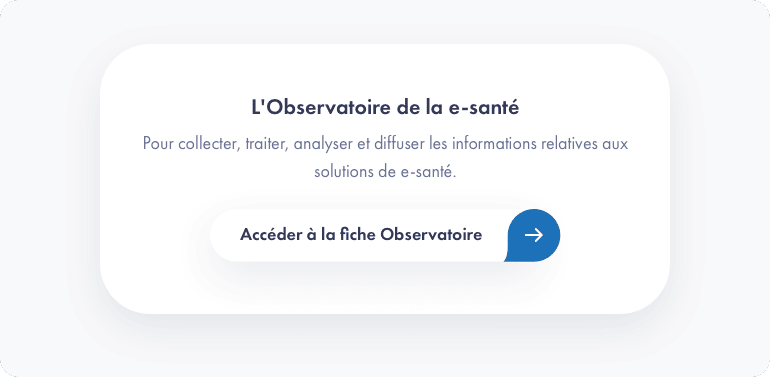

Charte éditoriale
Recommandations éditoriales
Le présent Code de rédaction interservice ANS est un document réservé à un usage interne qui se veut une déclinaison opérationnelle de la Charte éditoriale, laquelle constitue le positionnement stratégique des contenus promus par l’Agence du Numérique en Santé.
La Charte éditoriale est un outil mis à la disposition de tous les services par la Direction de la Communication pour assurer, dans les meilleures conditions possibles, la réalisation et le rayonnement des publications des différentes instances internes et partenariales de l’Agence du Numérique en Santé vis-à-vis de son écosystème.
Un outil de consolidation de la signature ANS
L’objectif de cette Charte éditoriale conçue par l’ANS repose sur :
- une meilleure visibilité des recommandations éditoriales à l’usage de tous les collaborateurs,
- une actualisation en continu dans le Design Système qui répertorie les composants et les outils graphiques.
Concrètement, la Charte éditoriale permet de mettre en place, plus simplement et efficacement, différents circuits de circulation dans l’information et de parfaire la présentation par publics.
Elle fournit les fichiers et les procédures nécessaires à l’harmonisation de l’apparence des différents sites ou rubriques, un facteur de confort important pour l’expérience utilisateur, afin d’obtenir une gamme de sites véritablement orientés client.
Guide de rédaction interservice à l’usage du contributeur
Les recommandations suivantes s'adressent aux personnes qui doivent rédiger, mettre à jour ou traduire des publications et textes portés par l’Agence du Numérique en Santé. Les règles d'usage typographiques sont très importantes aussi bien du point de vue du confort de lecture des internautes que du respect de la sémantique commune à toute l’Agence.
Les articles publiés sur le site esante.gouv.fr se doivent d’être les plus objectifs et factuels que possible. Une distance propre à garantir la plus grande neutralité et la précision des termes employés est exigée.
L’objectif est de situer l’article dans une thématique ciblée susceptible d’intéresser un large public, et d’en restituer la synthèse générale et attractive dès son introduction (voir à ce sujet la section « chapeau d’introduction » du Design Système) sans forcément résumer en détail.
Notre objectif est de favoriser, dans la durée, les interactions avec les bons éléments de langage sur les canaux de l’ANS en fonction de nos différentes cibles.
Circuit éditorial
Nouvelle maquette webpage (J-15)
- mise à disposition d’un gabarit Word en ligne par type de contenu à remplir par l’auteur de la demande (fiche produit, article, actualité, communiqué de presse, page d’atterrissage, etc…),
- présentation d’une page web brouillon par la DIRCOM (mises à jour, ajouts, suggestion de rédaction et de composants),
- validation des tierces pour BAT (bon à tirer).
Le statut BAT (bon à tirer) signifie la validation pour son inscription au planning de publication prévu pour toute l’Agence.
Mise à jour d’une page existante (H-24)
La demande d’ouverture des droits d’accès au back-office pour les contributeurs est à effectuer auprès de l’équipe de la DIRCOM.
- Actualisation :
- Première version publiée, revue par l’auteur. Une notification est reçue pour révision par la DIRCOM.
- Validation à H-24 :
- Suivi des éventuelles corrections en surbrillance. Validation pour mise au planning de publication par la DIRCOM et notification transmise à l’auteur de la révision.
Gabarit type à l’usage des contributeurs
Pour faciliter la lecture des textes, il est convenu de les subdiviser en intégrant des intertitres (jusqu’à 3-4 pour une actualité, 5-6 pour un projet).
Les textes sont susceptibles d’être traduits en anglais sur d’autres canaux de l’Agence, le style doit être sobre et impliquant.
Corps du texte ou Body text
Rendre le contenu plus lisible
Une unité de contenu ou argumentation (section d’article, présentation webinaire, sous-partie) doit être comprise entre 150 mots (1 051 caractères espaces compris, max 2 paragraphes) et de 250 mots (1 689 caractères espaces compris, max 5 paragraphes) maximum soit l’équivalent de 12 à 22 lignes de texte.
Pour l’insertion de citations, mettez-les en retrait à partir du bloc « Citations » dans le back-office et n’utilisez pas de guillemets dans le corps du texte.
La longueur souhaitée d’une publication est comprise entre 8 000 et 10 000 caractères (espaces compris) pour les fiches projets, entre 10 000 et 30 000 caractères (espaces compris).
Pour les posts d’actualité, une limite est fixée à 280 caractères espaces compris. Pour les posts événementiels ou d’appels à projet, la limite est fixée à 2 200 caractères espaces compris.
Principe de parcimonie
Il est fortement recommandé d’appliquer un principe de parcimonie dans tout type de rédaction. Veiller à éviter les contenus redondants, les reformulations inutiles, les approximations qui n’apportent pas de valeur ajoutée au contenu. En un mot, allez autant que possible à l’essentiel.
De même, il convient de s’efforcer de parler un langage plus direct volontairement plus proche du parler oralisé pour des raisons d’indexation informatique compatible avec l’assistant vocal. Effectivement, les recherches d’information se déroulent de plus en plus par ce procédé pour gagner du temps.
De sorte qu’il est pertinent de recourir aux mots-clés du domaine de spécialité et d’employer les termes appropriés tout en indexant le lien de référence vers l’entrée du glossaire (ou l’acronyme) pour gagner en visibilité dans les moteurs de recherche qui vont ainsi mieux promouvoir votre contenu.
10 conseils pour donner de l’impact à votre rédaction !
Conseil n°1 : votre information principale doit être visible et comprise dès le titre et le chapô/chapeau.
Conseil n°2 : rédigez à la 3ème personne et conjuguer les verbes au présent. Utilisez la formule active qui donne une image positive.
Conseil n°3 : pas de phrase inutile, si votre phrase n’apporte pas d’information importante, il convient de la supprimer.
Conseil n°4 : n’oubliez pas votre logo et le contact référent sur le sujet pour être contacté plus facilement.
Conseil n°5 : pas de jargon ni acronymes sans explications. L’utilisateur n’a pas le temps de décrypter votre contenu pour savoir si celui-ci peut l’intéresser.
Conseil n°6 : utilisez des phrases courtes : un sujet, un verbe et un complément.
Conseil n°7 : évitez les répétitions, les reformulations ou les phrases toutes faites que l’on a lues des milliers de fois.
Conseil n°8 : mettez en scène vos chiffres pour être plus mémorisables. Préférez-les % pour parler d’évolutions, utilisez des métaphores et comparaisons.
Conseil n°9 : rendez votre contenu plus interactif en utilisant : schéma, photos, liens web, vidéo. Cela facilite le partage sur les réseaux et fournit du contenu graphique à vos cibles.
Conseil n°10 : scindez votre contenu de manière à le simplifier à la façon d’une idée = un titre + un paragraphe. Ne perdez pas de vue que votre unique objectif est de susciter l’intérêt et l’envie de vous lire.
Du bon recours aux chiffres
- nombres exprimant une quantité : séparer les groupes de trois chiffres supérieurs à l’unité par une espace de frappe (espace fixe), et non par un point (exemple : 300 000),
- nombres exprimant une numérotation, tels que millésimes, folios, etc. : pas d’espace (exemples : 1961, p.2064),
- nombres décimaux : avec une virgule (exemple : 13,6), et non avec un point. La virgule est utilisée pour séparer les unités des décimales. Les décimales sont groupées en un seul bloc,
- les nombres se trouvant dans un texte courant sont considérés comme des mots et s’écrivent en toutes lettres. Si le texte comporte beaucoup de données chiffrées, les nombres s’écrivent en chiffres, le plus souvent arabes, ou romains, pour faciliter la lecture et la compréhension ou pour mieux faire ressortir les différences.
Données budgétaires: million (Mio) ou milliard (Mrd)
En ce qui concerne les données budgétaires, pour des raisons de comparabilité des chiffres, il est recommandé d’utiliser les formes suivantes :
- jusqu’à trois décimales après la virgule, rester au niveau de l’unité appropriée : 1,429 milliard (et non 1 429 millions),
- au-delà de trois décimales, descendre à l’unité inférieure : 1 429,1 millions (et non 1,4291 milliard).
Ainsi, la lisibilité des chiffres est meilleure et rend les comparaisons plus aisées.
De l’accessibilité des PDF
En utilisant les styles Word, en fin de traitement du texte, une table des matières peut être générée automatiquement ; lors d’une conversion en PDF pour une mise en ligne, ces titres généreront automatiquement des hyperliens (signets, ou bookmarks), éléments indispensables pour rendre confortable la consultation en ligne de longs documents PDF.
L’Agence fait du taux d’accessibilité du portail e-santé une priorité au regard des exigences de la Charte de l’Etat. Il est donc demandé d’améliorer l’indexation interactive des tables des matières des documents mis en ligne au format PDF et d’y inclure tout élément prompte à enrichir les métadonnées de documents publiés (résumé, mots-clés, date, etc.).
Le renommage ciblé des documents publiés ainsi que de leurs différentes versions (cf. le recours à l’alias) est fondamental pour offrir une audience plus large à vos contenus et bénéficier en cela d’une bonne indexation dans les moteurs de recherche des navigateurs.
Nommage des fichiers
Le nom du fichier doit être « signifiant » : il doit permettre d’identifier le contenu sans avoir à ouvrir le fichier. Suivant cette logique, il doit être succinct et synthétique.
Voici quelques règles simples pour y parvenir :
- limiter obligatoirement le chemin du fichier à 250 caractères maximum, extension comprise,
- proscrire les phrases complètes,
- éviter l’emploi des verbes, adverbes, adjectifs et des mots vides (articles, prépositions, conjonctions, etc.),
- utiliser les minuscules, sauf pour les abréviations,
- utiliser uniquement les abréviations recommandées et/ou normalisées (cf. fiche Liste des abréviations),
- ajouter un 0 devant les nombres de 1 à 9 pour faciliter le classement des fichiers.,
- pas de caractères accentués (é, è, ê, ë, à, etc.),
- pas de caractères spéciaux (/ \ # ( ) [ ],{ } ‹ › % * & @ $ € =, etc.),
- pas de ponctuation, y compris dans les sigles ( . , ; : ! ? « », etc.),
- pas d’espaces : utiliser uniquement l’underscore, touche 8 du clavier : ( _ ).
| Elément | Règle | Exemple |
|---|---|---|
| Sujet | Obligatoire, qualifie le sujet principal traité au sein du document. Utiliser des noms communs, écrits en lettres minuscules non accentuées. |
|
| Date | Obligatoire, détermine la date de création du document, selon le degré de précision souhaité. Utiliser le format à l’américaine, AAAAMMJJ, qui permet de classer automatiquement les fichiers de même nature par ordre chronologique. |
|
| Version du document | Obligatoire, permet de distinguer les différentes versions d’un document.
|
_V01 _VF |
| Code du service ou de la direction | Facultatif, qualifie le service émetteur du document. Se référer à la typologie des abréviations disponibles; toute abréviation sera en majuscules. | _DPE _DG |
| Type de document | Facultatif, qualifie la nature du document (compte rendu, note, facture, etc.). Se référer à la typologie des abréviations disponibles; toute abréviation sera en majuscules. |
CR (compte rendu) ODJ (ordre du jour) |
| Langue du document | Facultatif, permet de distinguer les versions en différentes langues d’un document, si elles existent. Elle se place toujours après la Version. «_fr » pour la version française ou « _en » pour la version anglaise. | _fr _en |
Lexique, sigles et abréviations
| Sigles et abréviations | Libellé étendu |
|---|---|
| PGSSI-S | Politique générale de sécurité des systèmes d'information de santé |
Ouvrages et références
En savoir plus sur les questions d’orthographe ou d’ordre linguistique :
- dictionnaires Larousse (Petit Larousse et Lexis),
- dictionnaires des synonymes (ex.: https://www.cnrtl.fr/synonymie/),
- dictionnaires Le Robert,
- Grevisse, M., et Goosse, A., Le bon usage, 16e édition, De Boeck Supérieur, Paris Louvain-la-Neuve, 2016,
- Hanse, J., et Blampain, D., Nouveau dictionnaire des difficultés du français moderne, 5e édition, De Boeck, Louvain-la-Neuve, 2005.
Au sujet de la relecture des épreuves d’imprimerie et règles typographiques en vigueur (règles de mise en pages, indications typographiques, etc.) :
- lexique des règles typographiques en usage à l’imprimerie nationale, Imprimerie nationale, 2002, Paris. ISBN 978-2-7433-0482-9
Pour les sigles, les acronymes et les abréviations :
- webpage Lexique disponible à l’adresse suivante : https://esante.gouv.fr/lagence/abecedaire
Les numéros du Journal officiel servent de référence permanente en ce qui concerne les nomenclatures en vigueur dans le Code de la santé publique.